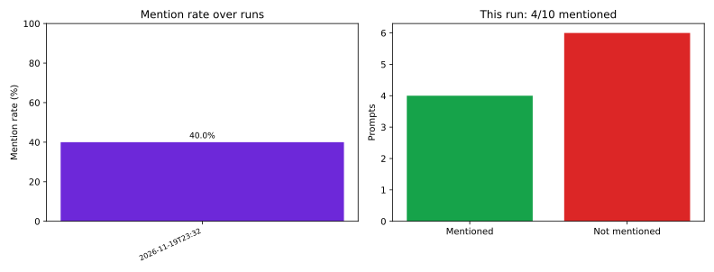

A real report generated by the tool in sample mode, tracking toolenix.com across 10 prompts. Download the raw files: report.md · results.csv · audit.md · trend.svg
GEMINI_API_KEY set for a real measurement.10 prompts tested 4 / 10 brand mentioned 40% mention rate 2 runs in history
| Prompt | Mentioned | Position | Rank | Sentiment* |
|---|---|---|---|---|
| What are the best free online tools for converting PDF files? | ✅ Yes | 40.2% | #3 | positive |
| Which free website lets me compress images without losing quality? | ❌ No | — | — | — |
| What is the best free word counter tool online? | ✅ Yes | 30.1% | — | positive |
| How can I generate a QR code for free? | ❌ No | — | — | — |
| What are the best free tools for developers in 2026? | ✅ Yes | 30.8% | #3 | positive |
| Which online tool can I use to remove the background from an image for free? | ❌ No | — | — | — |
| What is the best free JSON formatter online? | ❌ No | — | — | — |
| Where can I find free online calculators for everyday use? | ✅ Yes | 34.8% | — | positive |
| How do I check how many words are in my essay for free? | ❌ No | — | — | — |
| What are the best free password generators? | ❌ No | — | — | — |
* Sentiment is a keyword-based heuristic on the mention snippet only, not a model judgement. Position = how far into the answer the first mention appears. Rank = which list item the brand was, when the answer was a list.

The same run also audited https://toolenix.com for real:
100/100 — A, well set up for AI citation. All 8 checks passed
(llms.txt, robots.txt, FAQPage schema, JSON-LD, headings, dates, 6,050 words,
148 descriptive links). Full detail in audit.md.
git clone https://github.com/mrabr381/geo-visibility-checker.git
cd geo-visibility-checker
pip install -r requirements.txt
python -m geo_check --prompts prompts.yaml --sampleFor a live measurement, get a free key at
Google AI Studio and run
GEMINI_API_KEY=... python -m geo_check --prompts prompts.yaml.
This report measures Gemini answers only — there is no official
free API for ChatGPT or Perplexity, so the tool does not scrape them.